A PRACTICAL COMPANION / BY KID BUNKA
From the first sound
to your own track.
Take one route through the studio, then make it your own. This guide follows the actual controls and explains where your music lives.
A usually confirms. Hold A with a direction to edit a value. Start plays or stops. Select opens contextual help. A button can have a specific role inside an editor; the bottom help line describes that context.
Illustrations are actual app-rendered captures. The Internet workflow uses a real Wikimedia Commons source. Hardware-specific recording and direct iPhone input remain experimental.
01 / INSTALL
Android: choose a home for your music.
- Install the Android APK. Download the Extreme beta APK from the release section. Allow installation from that source when Android asks, then open the file.
- Open a file browser in the app. Choose ADD FOLDER… and confirm a folder in Android's system picker. A dedicated folder such as
Documents/PocketTrackerExtremeis a useful starting point. - Use the created folders. Keep audio in
Samples, songs inProjectsand SoundFonts inSoundfonts. The app remembers the granted folder. - Add the full preset library. Download the 2,048-preset pack and extract it into your chosen media folder, keeping the
Presets/Instrumentsstructure. - Load a sound or a factory preset. Go to INSTRUMENT → LOAD and choose the appropriate source.
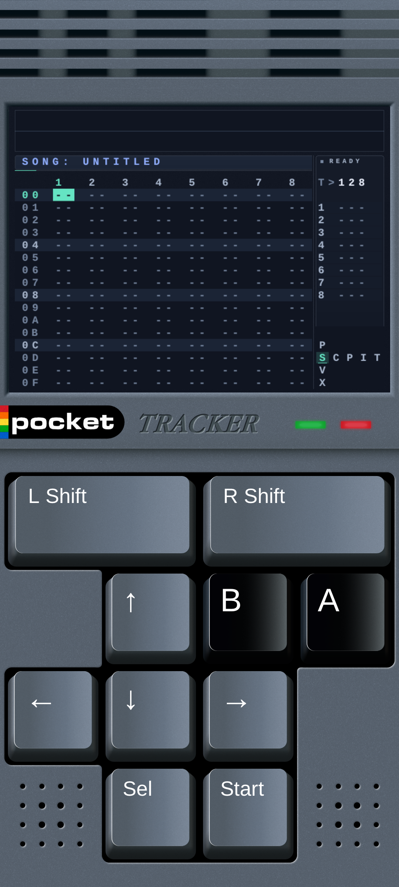
Android handheld compatibility
The APK targets Android phones and gaming handhelds with the requirements below. A successful build or emulator test is different from a physical-device report. RG405V is a target profile; its physical test has not yet been recorded for this beta.
| Requirement | What to check |
|---|---|
| Android version | Android 8.0 or newer (API 26+). |
| CPU build | 64-bit ARM (arm64-v8a), legacy 32-bit ARM (armeabi-v7a) and x86_64. One APK includes those CPU builds; the installed Android system must support at least one. The final 32-bit ARM build and its native libraries are verified, but physical 32-bit-device testing is still pending. |
| Controls | Standard Android gamepad input for D-pad, A/B, shoulders, Start and Select. The touch layout provides a fallback. Check the actual button mapping on the first run. |
| Screen | The 640×480 musical canvas scales to the display while keeping its proportions. Different aspect ratios can add borders or touch-control space. Portrait touch and physical-pad landscape layouts are available according to the active layout and device. |
| Memory | No universal measured RAM minimum is claimed. For longer loaded samples and layered engines, 2 GB or more is a recommended target for headroom, not a device-performance guarantee. Sample length and active engines determine memory demand. |
| Files | A writable media folder selected through ADD FOLDER… in Android's picker. Keep enough free space for your samples, recordings and renders. |
| Audio & USB | Output routing and latency depend on Android and the device. USB recording also depends on USB host support, the interface, cable and power. Treat each physical route as a separate test. |
Android-based Anbernic RG handhelds, Retroid Pocket models, AYN Odin and AYANEO Android handhelds are compatibility candidates when they meet those requirements. Model names alone do not certify every firmware or hardware revision. Linux-only Anbernic models and R36S-class devices use a native Linux package instead.
The final APK's 64-bit native libraries and package entries have been checked for 16 KB alignment. This is a build and packaging check, not certification of every newer Android device. The legacy 32-bit ARM libraries use 4 KB load alignment.
Open a sample, play a short phrase, test every physical button and try the display orientation you intend to use. Then check recording separately. Share your model, OS version, button results and audio route through the handheld compatibility form.
The public release uses its own release signature. A previous debug test can be installed separately. Back up your music, install the beta and choose your existing media folder rather than moving all your files. Android may request microphone access when you use recording.
02 / START HERE
From a new card to your first sound.
The native Brick package runs on KNULLI, the firmware and EmulationStation menu. The reference is KNULLI Scarab 20260511 for the original TrimUI Brick / Brick Hammer. KNULLI is a separate, unmodified download; it is not included in the tracker ZIP.
Skip to Install the tracker. Back up pockettracker_extreme/data before an update. Installing the app does not require reflashing or formatting.
1. Prepare the operating system — new card only
- Use a spare microSD card. Back up anything on a card you intend to reuse: writing an OS image erases its contents.
- Download the correct image. Use the official original Brick / Hammer Scarab image from KNULLI release 20260511. Choose the original Brick image, not Brick Pro or another handheld's image.
- Write and verify the image. Install Raspberry Pi Imager for macOS or Windows. Extract the downloaded
.img.gzif needed, choose the local custom image, select the spare card and write it. Complete verification. Decline Raspberry Pi-specific OS customization if offered. - Let the first boot finish. Insert the card into the powered-off Brick and start it. KNULLI creates and expands SHARE during setup. Wait until the EmulationStation menu appears before adding files.
Follow the official KNULLI installation guide for firmware-specific details. If your computer offers to format an unfamiliar KNULLI partition, cancel that prompt.
Check the original Brick OS download
Verified reference file: knulli-a133-trimui-brick-scarab-20260511.img.gz, 1,983,415,643 bytes. SHA-256:
2c6e059b0f7db9d6b0fce3c383e72ca989b1c1224f4b3e81af11c66ebea5421f
This identifies the official OS image, separate from the app package checksums.
2. For direct Mac / Windows copying
SHARE must use a format the computer can read. exFAT works in Finder and Explorer; Linux ext4 is not natively readable there. On a newly prepared spare card, before copying your music, use KNULLI's START → System Settings → Frontend Developer Options → Format a disk. Choose the correct SHARE data storage and exFAT, then reboot as instructed. Formatting deletes that storage's data. Keep an existing working card and sample library intact. See KNULLI's formatting instructions.
Shut down the Brick before moving its card into a reader. Open the large SHARE volume; the small boot volume is not the place for samples.
3. Install the tracker
- Download and extract the Brick package into
SHARE/roms/ports. Keep the launcher beside its app folder. Avoid an extra nested package folder. - Keep your existing
datafolder. Your songs, samples, settings and edited presets belong there. - Copy a few known WAV files into
data/Samples. Keep category subfolders if you like. The complete location is shown below.
SHARE/roms/ports/pockettracker_extreme/data/SamplesAt your computer, open SHARE and start with roms. On the Brick, that data area is /userdata. You do not need an Android folder grant or a library scan. This standalone launcher does not require a PortMaster update.
4. Optional: prepare the presets before first start
The package includes 2,048 factory presets. You can prepare them on your computer while the card is still connected, avoiding thousands of small file copies before the first app window. This uses Python 3 and preserves existing or edited presets.
python3 "/Volumes/SHARE/roms/ports/pockettracker_extreme/tools/prepare_presets.py"py "E:\roms\ports\pockettracker_extreme\tools\prepare_presets.py"On Linux, use python3 followed by the script's path on your mounted card. The script locates the factory and data folders automatically. Wait for it to finish; you do not need to repeat it for an already prepared pack.
Without the optional step, the first launch prepares missing factory presets before opening the native window. The screen can remain black during setup; SD-card setup time varies. This preparation happens before the 25-second first-frame watchdog starts. Later launches skip a pack already prepared successfully.
5. Eject, start and hear a sound
- Finish all copies and safely eject the card. Insert it into the powered-off Brick, boot and choose Ports → Pocket Tracker Extreme. Refresh KNULLI's game lists if the entry is missing.
- Open INSTRUMENT → LOAD → Samples / Audio. Up/Down selects, A opens a folder or loads a sound and Start auditions. R + ← or
..opens the parent; B closes the browser. - Make a short phrase and save a named test project. Reopen it to check its samples resolve. Continue with your first pattern, then try the Studio.
If a start fails, keep roms/ports/pockettracker_extreme/log.txt for your report. Check whether factory preparation completed before diagnosing a native startup failure.
COMMUNITY TARGET / NATIVE LINUX
R36S: choose the Linux test package.
R36S-class handhelds typically run Linux firmware. Use the separate R36S Community Test ZIP on a compatible setup.
The target requires 64-bit ARM Linux firmware (aarch64), glibc 2.31 or newer, the firmware's native SDL2 and a working Ports setup. Firmware versions and clone hardware can differ. Follow the package's included README for installation and keep a backup of your music before a test.
- Confirm the firmware meets the aarch64, glibc and native SDL2 requirements. Candidates include an up-to-date compatible ArkOS-style image or the official KNULLI Scarab R36S image (
knulli-rk3326-r36s-scarab-20260510.img.gz). Use the R36S image for R36S, never the Brick image. Neither route is certification of every clone or image. - Follow the community ZIP's README to add the app under the firmware's Ports directory. The app package uses system libraries; it does not bundle replacement SDL or libc libraries.
- Test launch and display fit. A software-only execution check cannot verify a physical R36S screen or input driver.
- Test D-pad, A/B, L/R, Start and Select, then open help. Verify the mapping before writing a session.
- Load a short known WAV through INSTRUMENT → LOAD → Samples / Audio. Preview with Start, load with A, then play a short phrase.
- Save a named test project, exit, reopen it and confirm its samples resolve.
- Check any microphone or USB recording route separately and report the exact hardware and firmware.
If launch fails, preserve the app's log.txt in ports/pockettracker_extreme and include its relevant error in the report.
Useful reports include the device revision, firmware name/version, button mapping, audio output and any USB interface. The same compatibility form accepts Android and Linux handheld reports.
03 / GET COMFORTABLE
A few controls, many musical moves.
| Control | What to expect |
|---|---|
| ↑ ↓ ← → | Move the cursor. In file browsers, up/down selects and left/right pages through a list. |
| A | Confirm an action, open a folder, load a file or insert a value, according to the screen. |
| A + direction | Edit the selected value. Left/right is usually fine; up/down is usually coarse. |
| B | Go back or clear a value according to context. In a file browser it closes the browser. |
| R + direction | Navigate the tracker screens. Inside the sample editor, R + up/down changes zoom instead. |
| Start | Play/stop. In a file browser it previews the selected audio file. |
| Select | Context help; the configured help mode chooses compact or full help. |
| Select + R | Open Studio directly from the main tracker screens. Use the same chord to leave it. |
| B + ←/→ in Studio | Move between Synth, FX Rack, Master, Punch, Input, Drumlab, Style and Digging. |
On Android, use the matching on-screen controls. When an editor or dialog owns the controls, close it before opening another page. The in-app help is the reference for that context.
04 / FIRST SESSION
Build one bar. Then make it move.
A song is an arrangement of chains. Each chain holds phrases. A phrase is the 16-step grid where you write notes. You can put different sounds on different tracks, or use several instruments within one phrase.
- Create a chain. On SONG, select track 1, row
00and press A. - Create a phrase. Hold R and tap right to enter the chain. Press A at row
00, then use R + right again to enter the phrase. - Choose an instrument. Move right to INSTRUMENT. Open LOAD → Samples / Audio for a local one-shot, or choose Synthesizers / Factory Presets for a synthesized sound.
- Write a note. Return to PHRASE. On the note column at step
00, press A to insert a note. Use A + directions to change note values. - Add a rhythm. Place kicks at
00and08, snares at04and0C, and hats between them. The instrument column chooses the loaded sound for each step. - Listen and adjust. Press Start. Change a note, volume or sound while listening. Keep the first pattern simple enough to hear each decision.
- Save a named project. Open PROJECT, give the song a name and choose SAVE. Add another track for bass or melody when the rhythm feels right.
00 C-4 00 KICK
02 C-4 02 HAT
04 C-4 01 SNARE
06 C-4 02 HAT08 C-4 00 KICK
0A C-4 02 HAT
0C C-4 01 SNARE
0E C-4 02 HATBeyond the first bar
Use chains to arrange phrases and song rows to build sections. Add per-step effects, instrument modulation, tables, scales and grooves as the arrangement grows.
Go further with the tracker core
External MIDI instruments, mixer sends and detailed tracker commands are covered in the core tracker reference. MIDI routing depends on your platform and connected hardware.
In the default navigation mode, enter a chain the song is using, then a phrase that chain is using. Create the reference first, then step into it.
05 / THE LIBRARY
Your folders are the library.
On the Brick, copy your audio here. No additional folder grant, database import or scan is required:
roms/ports/pockettracker_extreme/data/SamplesOn Android, use the Samples folder inside the home folder you granted. Keep your own structure: Drums/Kicks, Breaks, Melodic or any categories that make sense to you.
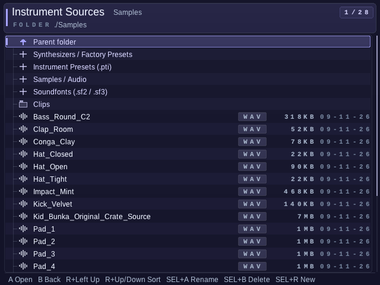
- Open INSTRUMENT → LOAD → Samples / Audio.
- Highlight a folder with up/down and open it with A.
- Highlight an audio file and press Start to preview it.
- Press A to load it into the current instrument slot.
- Use R + left, or select
..and press A, for the parent folder.
PCM 16-bit WAV at 44.1 or 48 kHz is a useful starting point. The Instrument LOAD browser also supports MP3, FLAC, Ogg/Vorbis, Opus and supported AAC tracks in M4A/MP4 containers. The sample editor's own LOAD filter currently shows WAV only. Unpack ZIP sample packs before browsing them.
After copying new files, reopen the browser or leave and re-enter the folder. Keep a project's sample paths stable; moving or renaming a file after using it can break the reference.
06 / THE SAMPLE LAB
A precise cut changes everything.
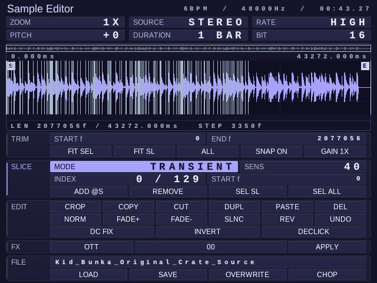
- Load a sound, then choose EDIT. The editor opens its waveform and sample controls.
- Set the useful region. Select the start or end value. Hold A + left/right for a fine adjustment, or up/down for a larger move.
- Zoom into the cut. Hold R + up/down. The selection nudge follows the zoom level, so you can move from broad gestures to individual frames.
- Choose a slice method. Use transient detection for breaks, equal divisions for a grid, or manual markers for an intentional phrase.
- Check each boundary. Preview with Start. Refine markers, use small fades or declicking where appropriate, then audition again.
- Save deliberately. Use SAVE or SAVE AS for the edited file. Keep an original copy when experimenting with destructive operations, and save the project after assigning the result.
Make a clean source
Crop, normalize, silence, fade, reverse, duplicate, repair DC offset or apply an offline effect. Undo gives you a route back through edits.
Make a playable instrument
Use slices and the instrument's root note to turn a recording into rhythm or melody. The visual waveform is a guide; the preview is the musical check.
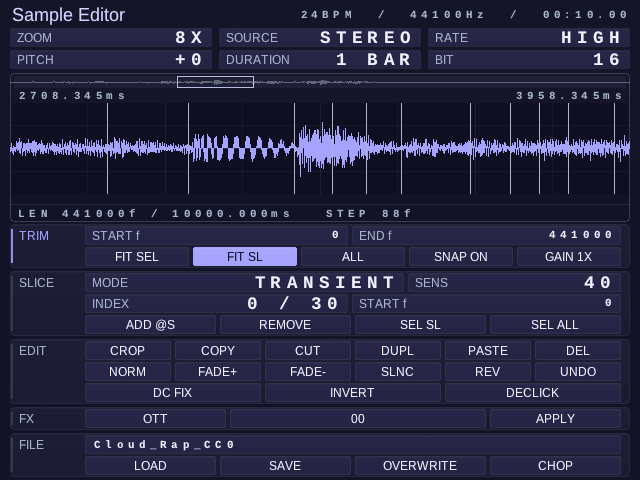
07 / SOUND DESIGN
Open the Studio. Stay in the music.
Use Select + R from a main tracker screen, the instrument's STUDIO entry, or LOAD → Synthesizers / Factory Presets. You do not need to travel through the project menu.
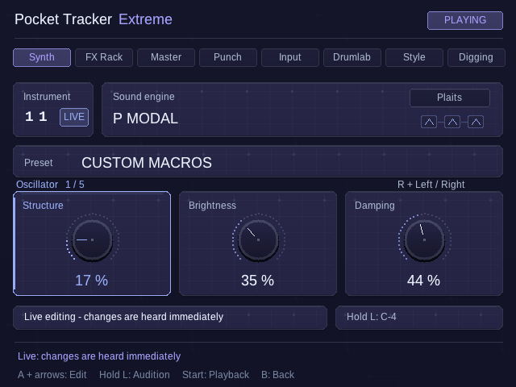
- Choose the target instrument. Check its slot before replacing a sound.
- Choose an engine and preset. The family label distinguishes Plaits, Braids, Rings, Elements, Granular and Studio DSP models.
- Hear the source. Hold L to audition a steady note. Release it to stop the audition.
- Explore the relevant controls. Hold A with a direction to edit. Use R + left/right for additional parameter pages.
- Commit a draft once. A draft needs LOAD INTO INSTRUMENT. For a synth already loaded in the slot, the LIVE state lets subsequent edits reach it while the sequence runs.
- Save a useful variation. Store an instrument preset and save the project. A preset is a good starting point, not a fixed destination.
Model and articulation variations share underlying engines. Their presence does not mean every hardware module's physical inputs or complete firmware behavior is reproduced.
08 / STARTING POINTS
Find a category. Follow the sound.
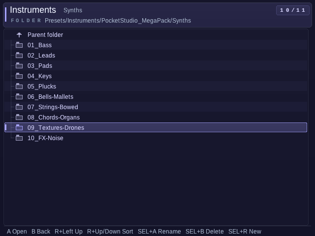
The supplied library contains 2,048 categorized instrument presets, including a broad drum-synthesis selection. The Brick package prepares this library automatically; on Android, extract the separate preset pack into your granted home folder first. Open INSTRUMENT → LOAD → Instrument Presets (.pti), then browse PocketStudio_MegaPack inside Presets/Instruments.
For drums, start with a kick, snare or hat category, then edit the synthesis controls and instrument envelope to fit the groove. For melodic material, compare several presets at the same note and volume before committing.
Audio and presets are different.
A WAV is recorded audio. A .pti instrument preset stores an instrument's settings and source reference. Keep sample-based presets together with the audio they need.
SoundFonts are another source.
Put your licensed .sf2 or .sf3 files in Soundfonts and choose LOAD → Soundfonts. They are not part of the synthesized preset library.
09 / THE DIGGING ROOM
Discover, preview, mark, render.
Open Studio and use B + left/right to reach Digging. This workflow turns a selected Internet-audio region into a local WAV that you can edit like any other sample.
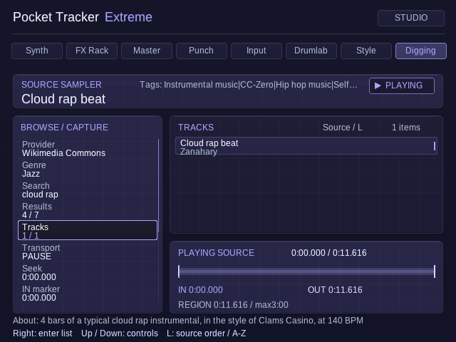
- Choose a provider and genre. Use a source with material you are allowed to sample. Search when you know what you want, or choose Random for discovery.
- Open a result, then a track. Some results contain more than one audio track. Choose the specific track you want to hear.
- Start preview playback. Use the Transport row or Start. Seek through the source until you find a useful phrase.
- Set an IN and an OUT. Press A on each marker row at the desired playback position. Fine adjustments use A + left/right. Keep IN before OUT.
- Render the selection. The renderer creates a PCM WAV for the region, with a maximum selection of three minutes. A short 10–30 second idea is a useful first test.
- Choose the target slot and import. Stop tracker playback before importing. Import WAV loads the clip and opens the normal sample editor.
- Make it your own. Trim, slice, pitch and sequence the local clip. Imported clips are kept under
Samples/Clips; retain their adjacent source-details files when backing them up.
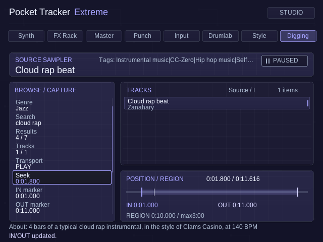
Check the source page and license link for the recording. Prefer your own recordings, public-domain material or a license that permits your intended use. An archive may contain recordings under several different licenses. YouTube extraction has additional platform restrictions and can change or stop working; its availability in the beta is not a rights clearance. Keep credits with the clip.
Brick Digging needs a working Internet connection and the expected system tools. A connected Wi-Fi icon does not alone confirm that a source is reachable. Read the on-screen status if search, preview or rendering fails.
10 / CAPTURE
Bring the outside into the pattern.
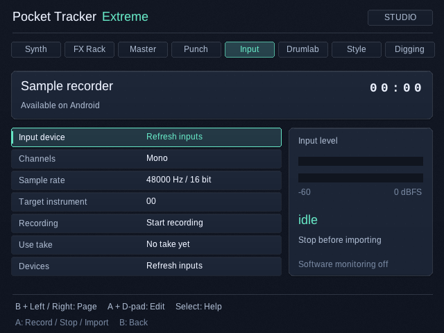
- Connect the audio input you want to test, or select the available microphone input on Android.
- Open Studio → Input and refresh the input list.
- Choose the input, mono/stereo setting, sample rate and target instrument slot.
- Start recording and watch the input indication. Avoid clipping at the source.
- Stop the take. Stop tracker playback before importing, then choose the import action.
- Open the editor to trim the result. Imported takes are stored under
Samples/Recordings.
Class-compliant interface support depends on the device, operating system, host connection and power. Direct iPhone-to-Brick capture failed in the user's repeated hardware test with the current setup. Both ports were reported to charge only; iPhone model/cable are unspecified. The experimental helper remains included, but direct capture is not working in this tested setup. Class-compliant audio interfaces remain a separate, pending hardware test. The beta does not promise that any USB-C cable or USB-C audio source will work.
11 / RHYTHM
A generator that hands the pattern back.
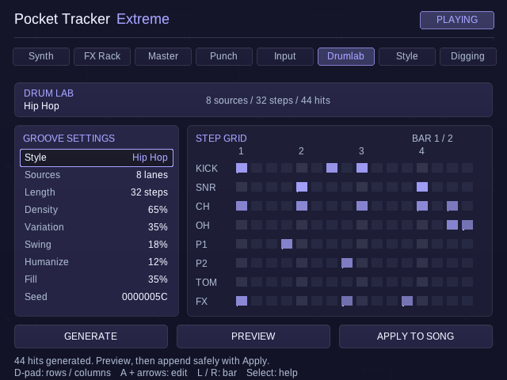
- Load 5–8 instruments. Assign a kick, snare, closed hat, open hat and percussion; add further roles if you want a larger kit. Samples or compatible loaded synth instruments can supply the sounds.
- Open Studio → Drumlab. Choose a style such as Hip Hop, Boom Bap, Lo-Fi, Drum & Bass, House, Techno, Dub or Breakbeat.
- Set the musical density. Select length, density, variation, swing, humanize and fill. Change the seed to explore another deterministic starting point.
- Generate, then preview. Listen with the actual assigned sounds. Regenerate after changing generation settings before relying on the preview.
- Apply deliberately. Check the destination and the app's status before writing to the tracker. Then edit the resulting phrases like any other material.
Use the generator to find a direction. Remove notes, move accents and write your own variations. Swing and velocity often matter more than adding another hit.
Explore the groove editor
The main tracker's GROOVE page lets you explore timing patterns separately. Compare a straight timing pattern with a swung one, then listen to the accents and phrase against it. When combining groove changes with Drumlab swing, check the result deliberately rather than stacking timing changes by habit.
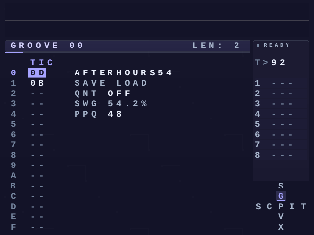
12 / PERFORMANCE
One held button.
A different moment.
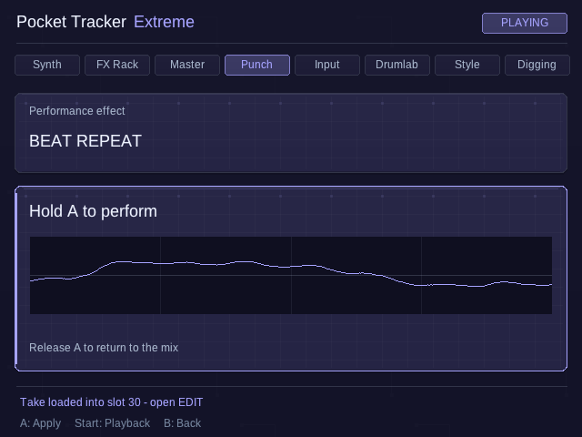
- Start a sequence with Start, then open Studio → Punch.
- Select the punch effect using the displayed edit controls.
- Hold A to engage the momentary effect. Release it to return to the unpunched playback.
- Try short gestures first: a repeat on the last beat, a brief filter movement or a reverse roll into the next section.
Explore beat repeat, roll, reverse, filters, bit crush, delay throw, gate, tape stop, speed changes, wave fold, ring modulation and more. Punch is a performance layer; save the song's musical structure separately.
13 / THE FINISH
Color first.
Level with intention.
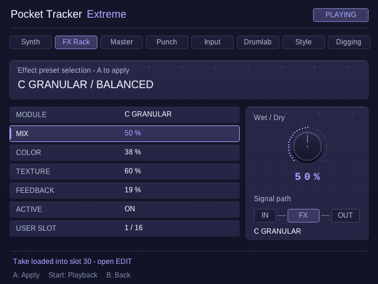
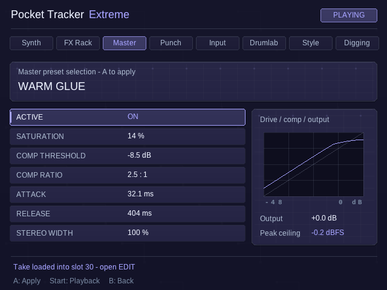
FX Rack
Choose an effect preset, apply it, then adjust wet/dry, color, texture and feedback. Compare at similar loudness. Save a custom preset when the combination is useful.
Master
Start with moderate levels in the mixer. The Studio Master provides drive, compressor threshold and ratio, attack, release, stereo width, high-pass filtering, output gain and peak ceiling. A preset can get you close; adjust it to the material instead of maximizing every control.
- Balance tracks before raising the master output.
- Set a high-pass filter only as needed for unwanted low-frequency energy.
- Add compression carefully and listen for the groove changing.
- Use drive for color, then re-check output level.
- Set a peak ceiling and listen to the rendered file, not only the live loop.
The transfer-curve graphic describes the settings. It is not a substitute for listening or a calibrated loudness meter.
14 / THE LOOK & FEEL
Make the studio feel like yours.
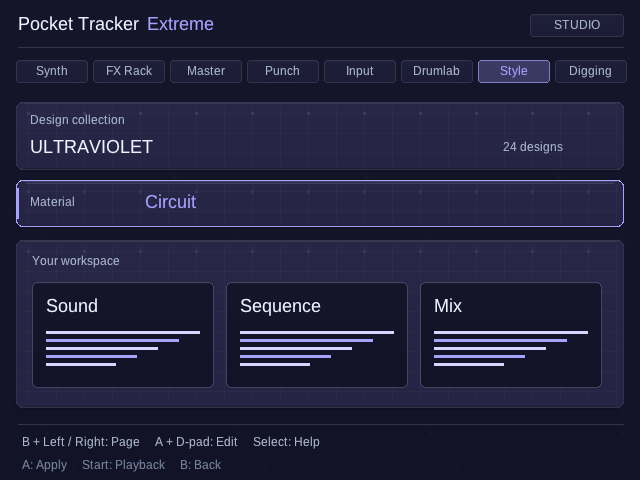
Open Studio → Style. Change the theme for a different palette, then choose a surface style for subtle scanlines, brushed patterns, grids or a cleaner display. The shared palette follows you between the tracker and Studio.
Choose the option that stays readable at your device's actual screen size. High contrast and clear value colors are useful in a live session; a textured surface is a matter of taste. Your music and instruments do not change with the theme.
For learning, keep context help available through Select. The compact help panel is a quick reminder; the full help mode explains the active screen in more detail.
15 / KEEP THE CONTEXT
Projects need their sounds.
Store Pocket Tracker projects as .ptp files in Projects. Back up the entire app data folder so projects, samples, presets and source details stay together.
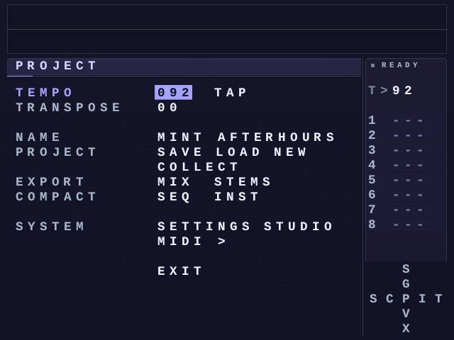
Import an M8 song
- Copy the original M8 song and its referenced Samples hierarchy together. Keep names and relative paths intact.
- Open the
.m8sfile through PROJECT → LOAD. - Read the import report before accepting the converted copy.
- Check sample resolution and the result of unsupported items. Then save the converted Pocket Tracker project under a new name.
The importer handles its documented song, arrangement and sampler subset. Unsupported M8 synths and effects are omitted and reported. The result can sound different; keep your original song and verify the imported arrangement.
Android content:// references are not normal Linux paths. When moving a project from Android to the Brick, include the actual media files and reassign sources through LOAD where needed.
16 / FINISH A SESSION
Save the idea.
Print the track.
- Save the project. Name it clearly and choose SAVE on the PROJECT screen.
- Listen through the arrangement. Check the start and end, transitions, sample references and output level.
- Render a mix. Use the PROJECT export action for a WAV mix. Export stems when you want separate tracks for a later mix.
- Check the file. Listen to the render outside the live sequence. Your exported files are kept in
Renders. - Back up the session. Keep the project and all referenced media together. Before an app update, copy the complete app data folder to your computer.
On the Brick, exit through the app's PROJECT → EXIT action and shut down KNULLI before removing the SD card.
RELEASE NOTES / 0.2.0-beta.1
A beta with an honest test boundary.
| Area | Current evidence |
|---|---|
| Brick startup & general use | User-tested Starts on the actual Brick; general workflows tested with no issues reported so far. Full acceptance testing continues. |
| Android / RG405V target | Software-tested Build and emulator checks. RG405V physical validation and a wider handheld/USB-audio matrix are still pending. |
| R36S / native Linux community target | Experimental Separate aarch64 Linux package; glibc 2.31+, native SDL2 and compatible Ports firmware required. No physical R36S test is recorded yet. |
| Synthesis, editor, Drumlab & mastering | Implemented Automated checks cover engine and workflow behavior; this is not a promise of identical performance on every device. |
| Internet-source browsing | Source-dependent Real Commons HTTPS search, preview and a 10-second region render verified in software. Provider availability, networking and permissions can vary. |
| USB interface recording | Experimental Physical interface, cable, host and power combinations need validation. |
| Direct iPhone input on Brick | Experimental Failed in the user's repeated hardware test with the current setup. Both ports were reported to charge only; iPhone model/cable are unspecified. The helper is experimental and not working in this tested setup. Class-compliant interfaces remain a separate, pending test. |
| M8 import | Partial compatibility Supported sampler/arrangement subset; unsupported synths and effects are omitted and reported. |
| Polyend Tracker Mini | Not this release A possible future firmware adaptation; the Android and Brick packages do not run on it. |
I cannot find my new samples.
Use INSTRUMENT → LOAD → Samples / Audio. On Brick, confirm they are inside roms/ports/pockettracker_extreme/data/Samples, unpacked from their ZIP. Reopen the folder. On Android, confirm the parent folder was granted in the system picker.
The file is visible but will not load.
Try a short known PCM-16 WAV first. A container extension does not guarantee a supported codec. Export the file as PCM WAV in an audio editor if needed; renaming its extension does not convert the audio.
The synth changes are not audible.
Check the target slot and the LIVE/Draft indicator. A draft needs to be loaded once. For a loaded synth, hold L to audition or play a phrase using that instrument. Check the instrument's volume and root note.
Internet search or preview fails.
Check the source status, Internet connectivity and provider. Try a short item from a permitted archive source. A source can change independently of the app; report the provider and the visible error without sharing account tokens.
An imported project sounds different.
Read the M8 import report and check unsupported items and missing audio paths. The importer does not reproduce every M8 engine or effect. Keep and compare the original.
The Brick stays black at launch.
The first launch may still be preparing 2,048 factory presets before the app window opens. This happens before the native 25-second first-frame watchdog; there is no universal SD-card setup time. Use the optional computer preparation step to avoid that first-run work on the handheld. Check and preserve roms/ports/pockettracker_extreme/log.txt for a failed start. A device-driver stall can prevent an automatic return.
How do I report a useful bug?
Include the beta version, device and firmware, the screen you were using, a short set of steps and the result you expected. Add the relevant log after checking it for private paths or source details. Back up the project before sending a minimal reproducible copy.
CREDITS / RIGHTS
Made possible by shared work.
Pocket Tracker Extreme is developed as an independent Kid Bunka fork of PocketTracker. The application is distributed under GPL-3.0-or-later, with the required component licenses and source. Original authors and contributors retain their credits.
Mutable Instruments engines originate in Emilie Gillet's open-source work. Additional libraries, decoders, effects, fonts and platform helpers retain their own licenses. The repository's LICENSE, CREDITS and third-party notices are the authoritative distribution documents.
The supplied instrument preset library is generated from synthesis settings. Your songs, recordings and imported samples remain subject to their own rights; the application's license does not license someone else's music.
Project artwork and this guide identify an independent project. This is not an official release by Mutable Instruments, TrimUI, KNULLI, Dirtywave or Polyend.
Optional support goes to Kid Bunka for ongoing development. The app, source and every feature remain free. Support Pocket Tracker Extreme via PayPal
Guide prepared for 0.2.0-beta.1. Screen illustrations are real app-rendered captures of the shared Studio design. The Internet sequence uses a real permitted Commons source; other audio is project demo material. The Android illustration is a current signed-beta emulator capture. The Input illustration is a representative earlier capture of the same interface. Artist artwork is promotional artwork rather than a device photograph.